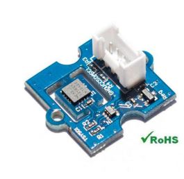

[copywiki destination=”plane,copter,rover”]
Temperature Sensors¶
ArduPilot supports up to nine individual temperature sensors with I2C interfaces:
{kind=link}
ArduPilot already has numerous possible sources for temperature reports: ESCs, Smart Batteries, Motor EFI and these independent sensors can be used to replace those devices temperature reports which already exist in ArduPilot. They can also just be logged.
Setup¶
Attach sensor to one of the autopilot’s I2C ports using SDA and SCL pins. Then set (examples shown for first sensor):
TEMP1_TYPE = 0:Disabled,1:TYSYS01,2:MCP9600,3:MAX31865 Sensor type
TEMP1_BUS = 0-3 Board’s I2C port on which the sensor is attached
TEMP1_ADDR = the sensor’s I2C address (0-127)
TEMP1_SRC = which other temperature reporting device type should have its temperature report replaced with this sensor’s.
TEMP1_SRC_ID = this identifies which individual device, of the above type, should have its report replaced.
Logging¶
TEMP_LOG = 0: No logging, 1: Log temperature reports from all temperature sensors